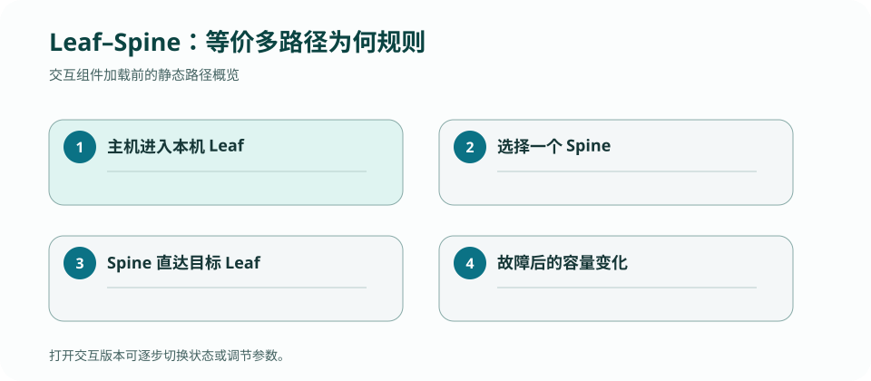

CS 168 · LECTURE 19 · 2026-11-05 · 数据中心
数据中心网络追求高双向带宽、低尾延迟和可维护故障域；leaf–spine/Clos 用大量等价短路径替代一棵粗壮而昂贵的树。
版本快照：Fall 2026 官方课表与在线教材，核对日期 2026-09-02；官网仍标注 under construction，日期与政策可能变化。
怎样让任意服务器对之间都能并发通信，同时仍使用可批量采购的交换芯片？
数据中心流量常是 east–west：计算、存储和服务之间横向通信，且一次用户请求会 fan out 到大量后端。平均带宽之外，最慢的子请求决定整体尾延迟。
单棵汇聚树的上层链路很快成为瓶颈与大故障域。只升级核心硬件成本高且扩展不平滑，Clos 通过增加平行交换机水平扩展。
每个 leaf 连接所有 spine。两个不同 leaf 下的服务器之间，经任一 spine 都有一条等长最短路，因此若有 \(k\) 个 spine，理论上有 \(k\) 条 ECMP 候选。单个 spine 故障只减少一份容量。
同 leaf 通信无需上行。路径与容量计算必须先区分同 rack、同 pod 与跨 pod，否则会把不经过上层的流量算进 bisection。
leaf 下行总容量除以上行总容量得到 oversubscription 的一种常见表达。1:1 表示最坏情况下所有服务器满速跨 leaf 仍有匹配上行；更高超卖用成本换取依赖流量不会同时峰值的假设。
bisection bandwidth 衡量把节点分成两半时跨割可承载多少流量。实际可用吞吐还受哈希碰撞、故障与流方向影响。
短流（mice）对排队延迟敏感，长流（elephant）贡献大部分字节并容易占据队列。简单 FIFO 下一个大突发可让很多短 RPC 超时，触发上层重试放大负载。
数据中心拥塞控制常用浅队列、ECN、优先级或更精细调度，但任何机制都要防止 starvation，并在真实 incast 工作负载下验证。
层次、冗余路径和上行超卖是拓扑关系，逐层展示能减少空间推理负担。

画 4 leaf × 4 spine，每链路 100 Gbit/s；计算两个 leaf 间候选路径、一个 spine 故障后的总上行容量，并构造一次最坏哈希碰撞。
检查：leaf–spine 中传统 ECMP 通常如何分流？
leaf-spine 中 host→leaf→spine→leaf→host
leaf-spine 中 host→leaf→spine→leaf→host；每对 leaf 有多条等价路径，traffic pattern 决定 oversubscription。
检查：判断一个实现分支是否必要，最有力的问题是什么？
给定四条 elephant flows，比较集中与散列后的链路负载。
答案必须出现 packet/message、local state/table、触发 event、after state 与 output；只给定义不算完成。
正文是 CourseStack 的中文解释与重新绘制的教学例子；官方页面负责课程原始定义，历史仓库只提供你的实现证据。